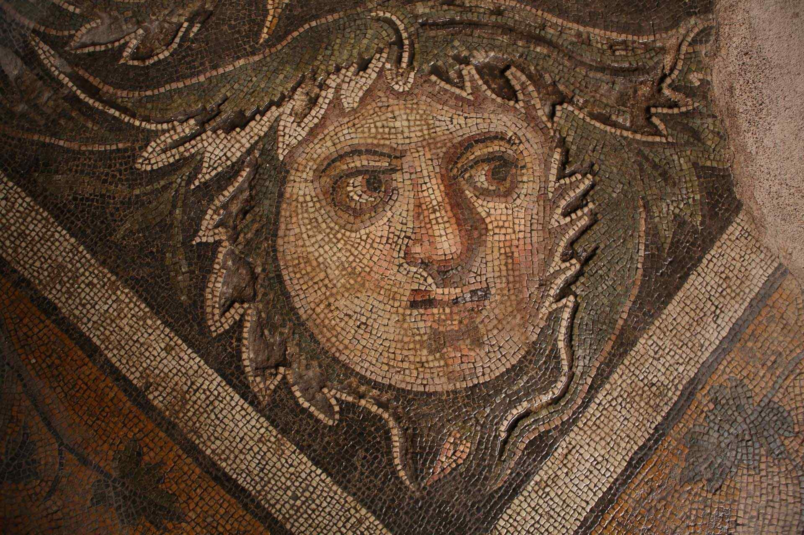
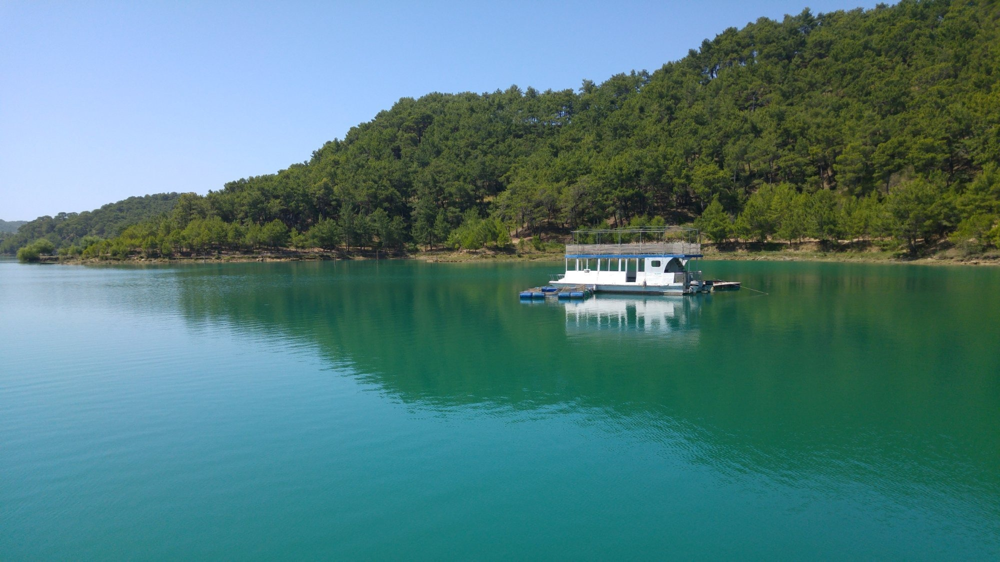

|  |
Germanicia Mozaikli Alan
İlimiz Dulkadiroğlu ilçesinde; Şeyhadil, Bağlarbaşı, Namıkkemal ve Dulkadiroğlu Mahallelerini kapsayan ve Müze Müdürlüğü tarafından yapılan kazılar ve araştırmalar sonucu Germanicia Antik Kenti olduğu anlaşılan kent bulunmaktadır. Maraş, Roma Dönemi’nde Romalıların egemenliği altına girmiştir ve şehri alan Roma Komutanı, iktidarda bulunan Roma İmparatoru Gaius Caesar Germanicus (Caligula) onuruna şehre Germanicia adını vermiştir.
|
|  |
Yeşil Göl
Hayranlık uyandıran Yeşilgöl'ün suyu 20 metre derinlikteki bir obruktan çıkıp Tekir Deresi ile birleşiyor. Soğuk suyunun yeşil, turkuaz ve mavi renklerini alması kimine göre güneş ışınlarının suya düşüş açısından, kimilerine göre de obruğun derinliği ve çevresindeki ağaçlardan kaynaklanıyor. Ancak şimdiye kadar ortaya bilimsel bir tanı konulamadı.
|